DV-EST-009 · Qualquer usuário com login e senha autoriza a entrada de material no recebimento, mesmo sem nenhuma permissão no Estoque
Na tela de **Recebimento de Material**, a autorização da entrada de material é feita num quadro que pede **login e senha** de quem autoriza. O quadro só recusa a **mesma pessoa que cadastrou o recebimento**; ele **não confere perfil, grupo, almoxarifado nem permissão**. No teste, um usuário de **consulta, sem nenhuma permissão no Estoque**, autorizou o recebimento 00014 ("Recebimento Autorizado!"); a tela registrou "Autorizado por" com o nome dele. **Risco:** a entrada de material, que na norma deve ser autorizada por pessoa designada, pode ser autorizada por qualquer pessoa com login válido. Sem a pessoa designada, a quarentena e a cadeia de aprovação perdem a base. O ponto bom: a tela registra quem autorizou e impede que quem cadastrou também autorize.
Como reproduzir o erro, passo a passo
- Cadastrar e confirmar um recebimento com um usuário de teste do Estoque (no teste, recebimento 00014).
- Com esse usuário na tela, abrir o recebimento e o quadro Autorizar.
- No quadro, digitar o login e a senha de outro usuário de teste, que não tem nenhuma permissão no Estoque, e confirmar.
- Voltar à lista e conferir "Autorizado por".
Esperado
O quadro aceita só usuários com a função de autorizar recebimento (por exemplo, responsável pelo almoxarifado), recusa os demais com mensagem clara e exige assinatura eletrônica identificada (RN-EST-045).
Obtido
"Recebimento Autorizado!" com o usuário sem permissão; "Autorizado por" = esse usuário.
Sem captura de tela registrada para este defeito.
DV-EST-014 · Lote com validade vencida é aceito no recebimento, sem aviso
Na tela **Recebimento de Materiais - Lote**, um lote com **Data de Validade de ontem** (07/10/2026, teste feito em 08/10/2026) foi gravado com "Inclusão realizada!" e aparece na grade de lotes do item, sem recusa e sem alerta. O código só confere se a validade foi informada e se é uma data válida; não compara com a data de hoje nem com a data do recebimento.
Como reproduzir o erro, passo a passo
- Abrir Estoque › Recebimento de Material, abrir o recebimento 00015, a NF 9003 e o item 1 (TST0001 - TESTE MATERIA PRIMA).
- Clicar em INCLUIR LOTE.
- Preencher Fabricante TESTE PJ FARMACÊUTICA LTDA, Código do Lote TESTELOTE004, Data de Validade com a data de ontem (no teste, 07/10/2026), Quantidade 50,000, Nº Volumes 1.
- Clicar em SALVAR.
Esperado
Recusar o lote vencido com mensagem clara (por exemplo, "Data de validade vencida"), ou, se a área de Qualidade decidir aceitar para registro, exigir justificativa e bloquear o lote (reprovado/não disponível). *Ponto para validar com a Garantia da Qualidade.*
Obtido
"Inclusão realizada!". O lote TESTELOTE004 com validade 07/10/2026 ficou na grade do item, sem nenhum alerta.
Evidência (captura da tela)


DV-EST-022 · A avaliação do fornecedor não qualifica nem bloqueia ninguém
A tela não tem campo "qualificado" nem nota de corte. A coluna "Qualificado" da lista mostra **SIM** para qualquer fornecedor avaliado, mesmo com 350 pontos de não conformidade. Um novo recebimento do mesmo fornecedor passa **sem nenhum aviso**.
Como reproduzir o erro, passo a passo
- Abrir Estoque › Avaliação do Fornecedor e avaliar a entrega da NF 9006 com três respostas 100 e uma 50 (soma 350).
- Conferir a coluna "Qualificado" na lista.
- Abrir um novo recebimento (NF 9008) do mesmo fornecedor e seguir até "Cadastro Finalizado!".
Esperado
Fornecedor reprovado na avaliação é bloqueado ou exige decisão registrada da Garantia da Qualidade.
Obtido
Lista mostra "Qualificado = SIM"; o novo recebimento passou sem aviso em nenhuma etapa.
Sem captura de tela registrada para este defeito.
DV-EST-162 · Reabrir Recebimento não pede justificativa e não registra a reabertura nem quem reabriu
No recebimento já RECEBIDO, **Reabrir Recebimento** pergunta só "Deseja reabrir o Recebimento?" e responde "Recebimento reaberto!". A confirmação e a autorização são apagadas e o recebimento volta a EM RECEBIMENTO, mas o **log do recebimento** mostra apenas a inclusão e a data de autorização: **a reabertura não aparece, nem quem reabriu, nem o motivo**.
Como reproduzir o erro, passo a passo
- Confirmar um recebimento (RECEBIDO).
- Abrir o recebimento e clicar em REABRIR RECEBIMENTO; responder SIM.
- Abrir o Ver Log Alteração do recebimento na lista.
Esperado
Pedir justificativa; registrar no log quem reabriu, quando, o motivo e o que foi apagado.
Obtido
Sem justificativa; log sem a reabertura.
Evidência (captura da tela)
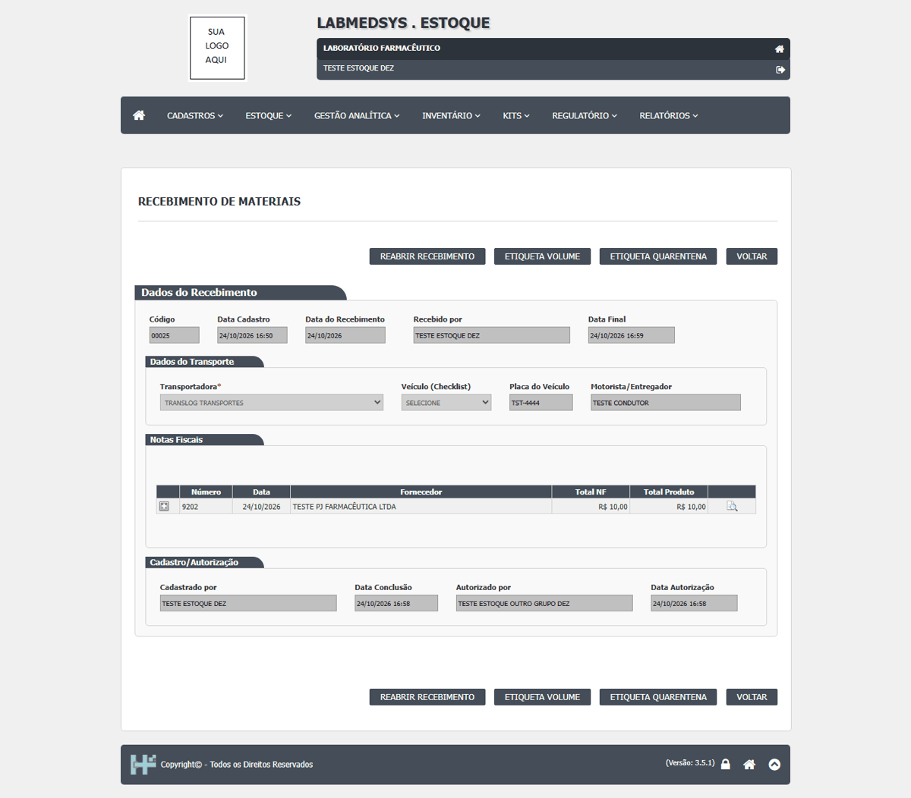
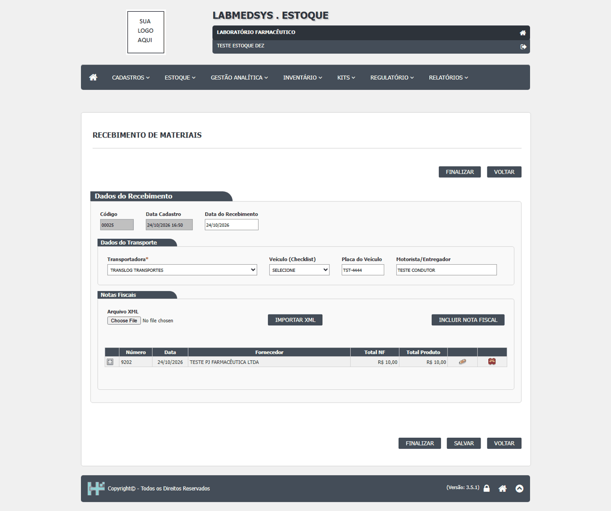
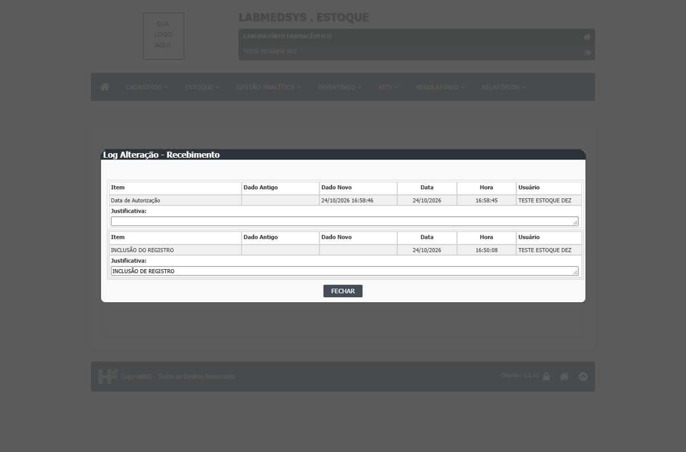
DV-EST-001 · Código do lote perde os hífens: "TESTE-LOTE-001" vira "TESTELOTE001"
No campo **Código do Lote**, o hífen digitado é descartado sem aviso: `TESTE-LOTE-001` foi gravado como `TESTELOTE001` e `TESTE-LOTE-002` como `TESTELOTE002`. O campo só aceita letras, números e espaço. O registro de entrada deixa de trazer o lote do fabricante como ele é, o que atrapalha a rastreabilidade (busca, comparação com o laudo do fabricante, recolhimento).
Como reproduzir o erro, passo a passo
- Abrir Estoque › Recebimento de Material, um recebimento em aberto, a nota fiscal e o item.
- Clicar em INCLUIR LOTE.
- No campo Código do Lote, digitar TESTE-LOTE-002.
- Preencher os demais campos e clicar em SALVAR.
Esperado
Guardar o código exatamente como digitado (com hífens, barras, pontos e outros caracteres usados por fabricantes).
Obtido
O campo mostra e grava TESTELOTE002, sem os hífens e sem aviso.
Evidência (captura da tela)


DV-EST-002 · Quantidade do lote: digitar 100 grava 0,100
O campo **Quantidade** do lote tem uma máscara que trata os últimos 3 dígitos como casas decimais: digitar `100` vira `0,100`. O erro só aparece no fim, ao finalizar o recebimento, como "Item com divergência na quantidade do lote!". Para gravar 100 é preciso digitar `100000` ou `100,000`. Há risco de registrar a quantidade errada.
Como reproduzir o erro, passo a passo
- Abrir Estoque › Recebimento de Material, um recebimento em aberto, a nota fiscal e o item (quantidade 100).
- Clicar em INCLUIR LOTE.
- No campo Quantidade, digitar 100.
- Observar o campo e o campo Qtde. Recebida; clicar em SALVAR.
Esperado
Digitar 100 grava 100 (100,000). As casas decimais só entram quando o usuário digita a vírgula.
Obtido
O campo mostra 0,100 e a Qtde. Recebida 0,100. Foi preciso alterar o lote para 100,000 ("Alteração realizada!").
Evidência (captura da tela)


DV-EST-010 · "Confirmar recebimento" falha com erro genérico quando o item não tem almoxarifado de identificação
Depois de autorizado, o recebimento precisa do botão **CONFIRMAR RECEBIMENTO**. Para o item `TESTE MATERIA PRIMA`, que foi salvo **sem "Almoxarifado de Identificação"**, o botão falhou quatro vezes com **"Erro ao Finalizar Recebimento!"**, depois de 23 a 26 s. Com o item `TST0002`, que tem esse campo preenchido, o mesmo botão funcionou em 4,5 s. O cadastro do item **deixa salvar sem esse campo** (que não tem asterisco), o campo fica **travado** depois que o item tem movimento, e o recebimento não diz o que falta.
Como reproduzir o erro, passo a passo
- Em Cadastros › Item, ter um item com Almoxarifado de Identificação = SELECIONE (no teste, TST0001 - TESTE MATERIA PRIMA).
- Em Estoque › Recebimento de Material, criar o recebimento com NF, item e lote, clicar em FINALIZAR e autorizar com outro usuário.
- Clicar em CONFIRMAR RECEBIMENTO e confirmar.
- Repetir com um item que tem Almoxarifado de Identificação = TESTE ALMOX (no teste, TST0002, recebimento 00016).
Esperado
O cadastro do item exige o almoxarifado de identificação quando o item vai ser recebido (ou o recebimento usa outro dado), e, se faltar algo, a mensagem diz exatamente o quê (por exemplo, "Item TST0001 sem almoxarifado de identificação").
Obtido
"Erro ao Finalizar Recebimento!" nos recebimentos 00013 e 00014, em 23 a 26 s. No 00016: "Recebimento finalizado!" em 4,5 s, status RECEBIDO, item de entrada TA0001/26.
Evidência (captura da tela)
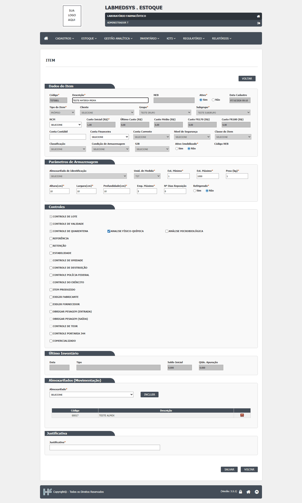
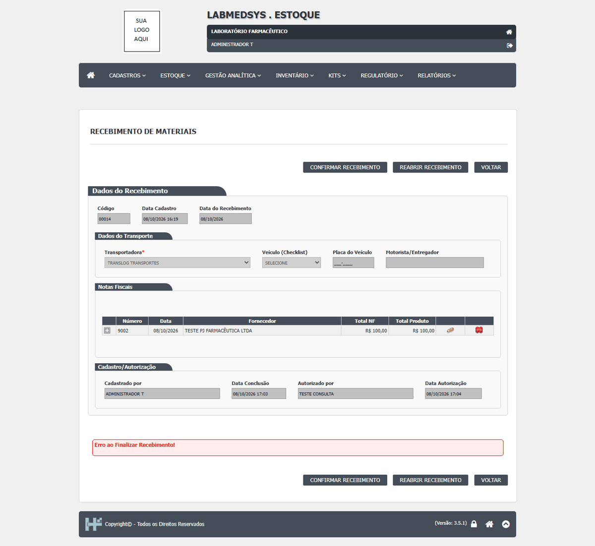
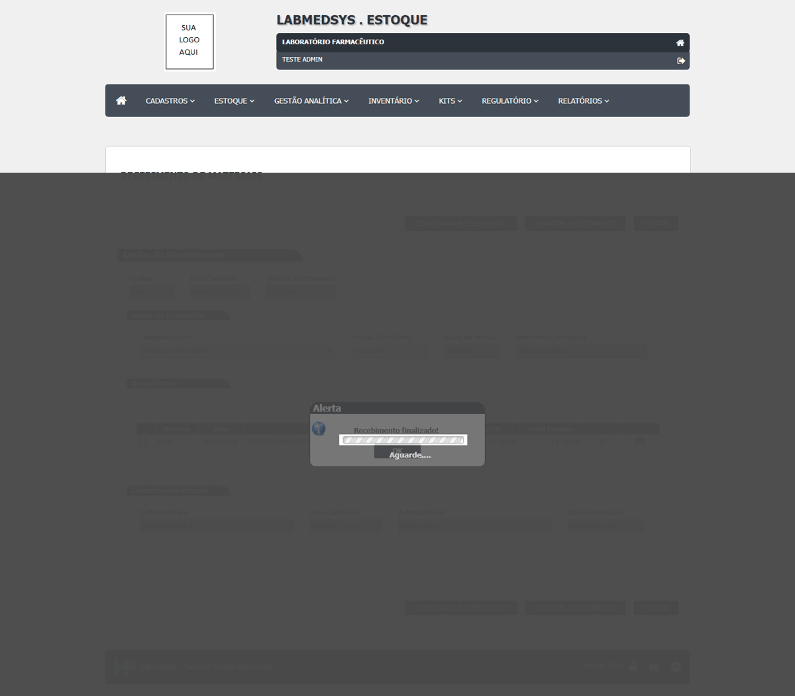
DV-EST-011 · Checklist com parecer "Reprovado" aparece na lista de veículos para usar no recebimento
Um checklist salvo com Parecer **Reprovado** (00005, placa TST9999) aparece na lista **Veículo (Checklist)** do Recebimento, junto com os aprovados ("00005 - TST9999"). Nada impede usar um veículo reprovado na inspeção para receber material.
Como reproduzir o erro, passo a passo
- Em Estoque › Checklist de Inspeção Veicular, incluir um checklist com placa TST9999, Parecer Reprovado, e clicar em SALVAR REGISTRO.
- Abrir Estoque › Recebimento de Material e incluir um novo recebimento.
- Abrir a lista Veículo (Checklist).
Esperado
Checklists reprovados não aparecem para seleção no recebimento (ou aparecem marcados e bloqueados), e o recebimento com veículo reprovado é recusado com mensagem.
Obtido
A lista mostra "00005 - TST9999" junto com os aprovados. O teste não chegou a salvar um recebimento com ele.
Evidência (captura da tela)
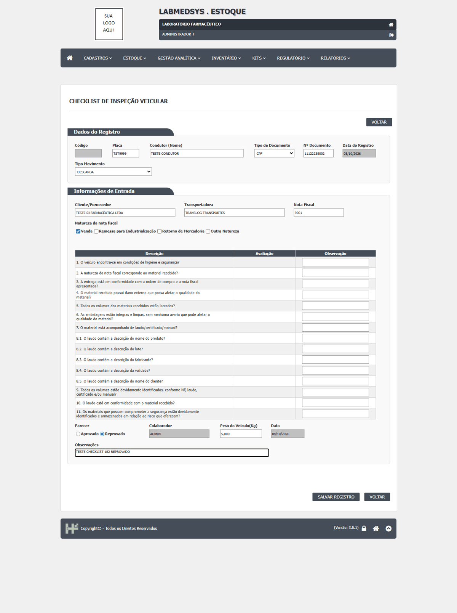
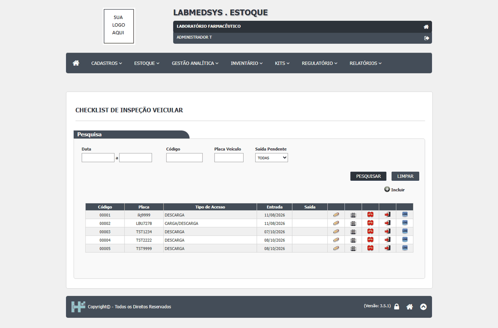
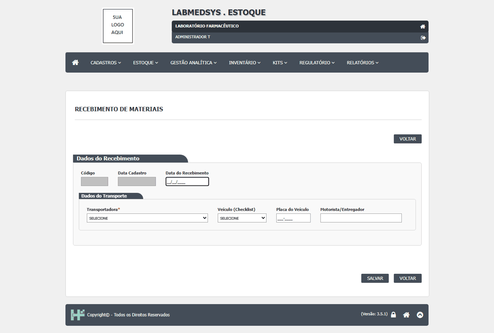
DV-EST-012 · Recebimento é salvo sem checklist de inspeção, sem placa e sem motorista
Na tela **Recebimento de Materiais**, só a Data do Recebimento e a Transportadora são exigidas. Com **Veículo (Checklist)** = SELECIONE, **Placa do Veículo** e **Motorista/Entregador** em branco, o sistema grava ("Recebimento gerado!", nº 00014). A inspeção veicular deixa de ser obrigatória.
Como reproduzir o erro, passo a passo
- Abrir Estoque › Recebimento de Material e incluir um recebimento.
- Preencher só Data do Recebimento e Transportadora (TRANSLOG TRANSPORTES); deixar Veículo (Checklist), Placa do Veículo e Motorista/Entregador vazios.
- Clicar em SALVAR e confirmar com SIM.
Esperado
Exigir o checklist de inspeção (aprovado) e, por consequência, placa e motorista, antes de gravar o recebimento. Se a área quiser exceções (por exemplo, entrega por correio), exigir justificativa. *Ponto para validar com a área.*
Obtido
"Recebimento gerado!" (nº 00014) sem checklist, placa ou motorista.
Evidência (captura da tela)
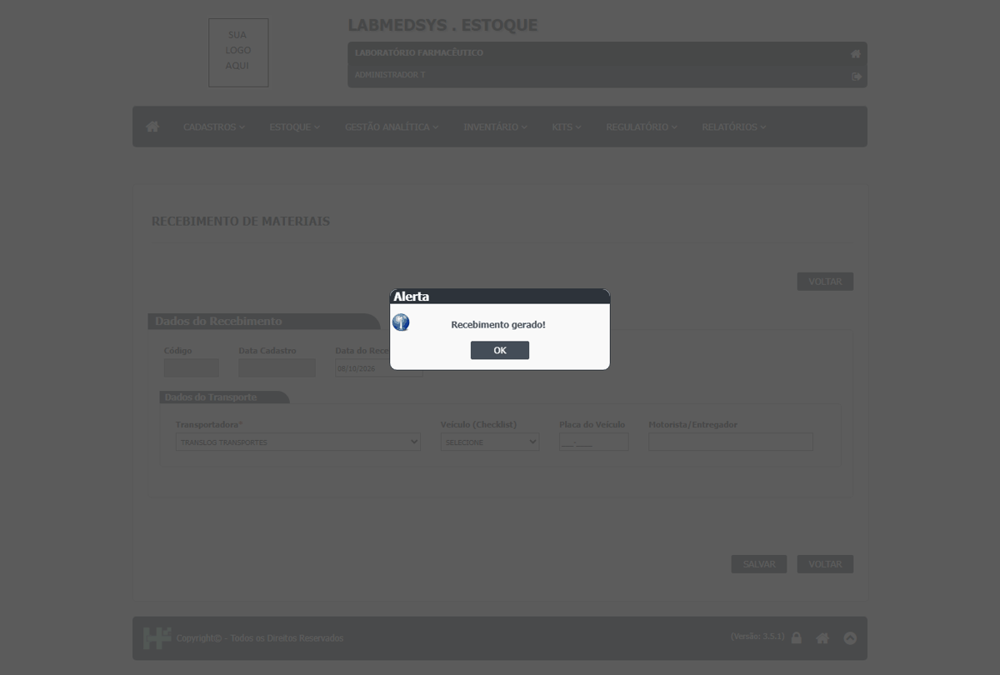
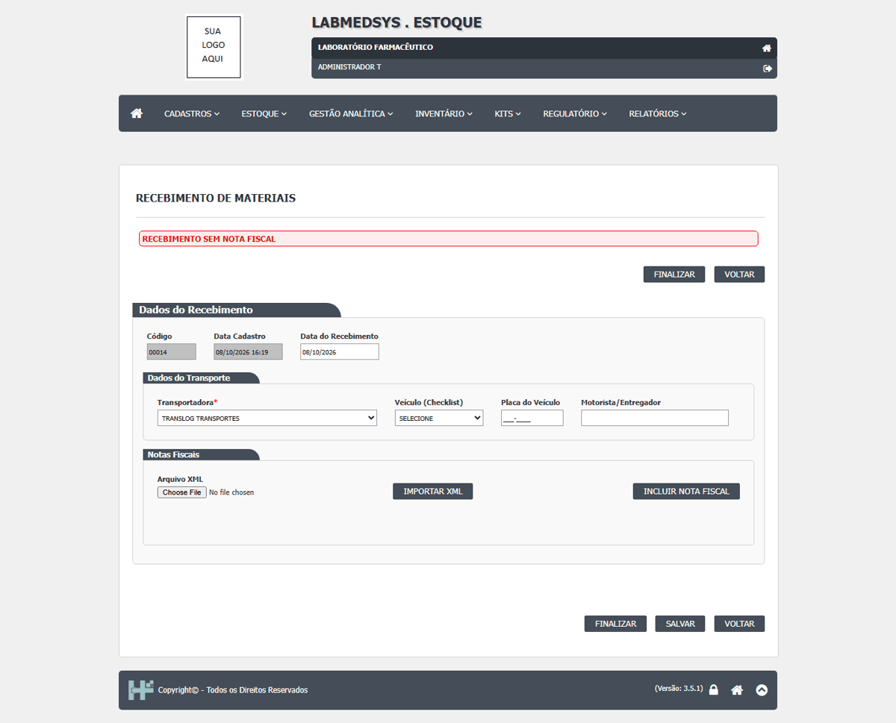
DV-EST-003 · Sem a Data do Recebimento, o botão SIM não faz nada e não mostra mensagem
A **Data do Recebimento** é obrigatória, mas a tela não avisa. Ao salvar sem ela, a confirmação aparece e o botão **SIM** não faz nada: não grava e não mostra mensagem.
Como reproduzir o erro, passo a passo
- Abrir Estoque › Recebimento de Material e incluir um recebimento.
- Escolher a Transportadora e deixar a Data do Recebimento em branco.
- Clicar em SALVAR e depois em SIM.
Esperado
Mensagem "Data do Recebimento é obrigatória!" (ou parecida), sem gravar.
Obtido
O botão SIM não faz nada e nenhuma mensagem aparece.
Sem captura de tela registrada para este defeito.
DV-EST-013 · Nota fiscal sem a série não grava e não avisa; mensagens apontam o campo errado
Na tela **Recebimento de Materiais - Nota Fiscal**, com a **Série** em branco, o sistema pergunta "Deseja salvar a Nota Fiscal?", repete a pergunta depois do SIM e **não grava, sem nenhuma mensagem**. Outras mensagens apontam o campo errado: sem o Nº da NF aparece também "Campo Série é obrigatório!" (com a série preenchida); sem a Data de Entrada aparece "Data da Nota Fiscal não informada"; sem o Total Produto aparece também "Valor do Frete da Nota Fiscal não foi informado!" (com o frete preenchido). "Tipo de Movimentacao" está sem acento.
Como reproduzir o erro, passo a passo
- Abrir Estoque › Recebimento de Material, um recebimento em aberto, e clicar em INCLUIR NOTA FISCAL.
- Preencher todos os campos obrigatórios, menos a Série.
- Clicar em SALVAR NOTA FISCAL e depois em SIM.
- Repetir deixando em branco, um de cada vez, o Nº da NF, a Data de Entrada e o Total Produto, e ler as mensagens no rodapé.
Esperado
Sem a série: "Campo Série é obrigatório!" e nada gravado. Cada mensagem cita só o campo que falta.
Obtido
Sem a série: a pergunta se repete e nada é gravado, sem mensagem. Sem o Total Produto: "Valor Total do Produto na Nota Fiscal não foi informado!" e "Valor do Frete da Nota Fiscal não foi informado!" com o frete preenchido.
Evidência (captura da tela)
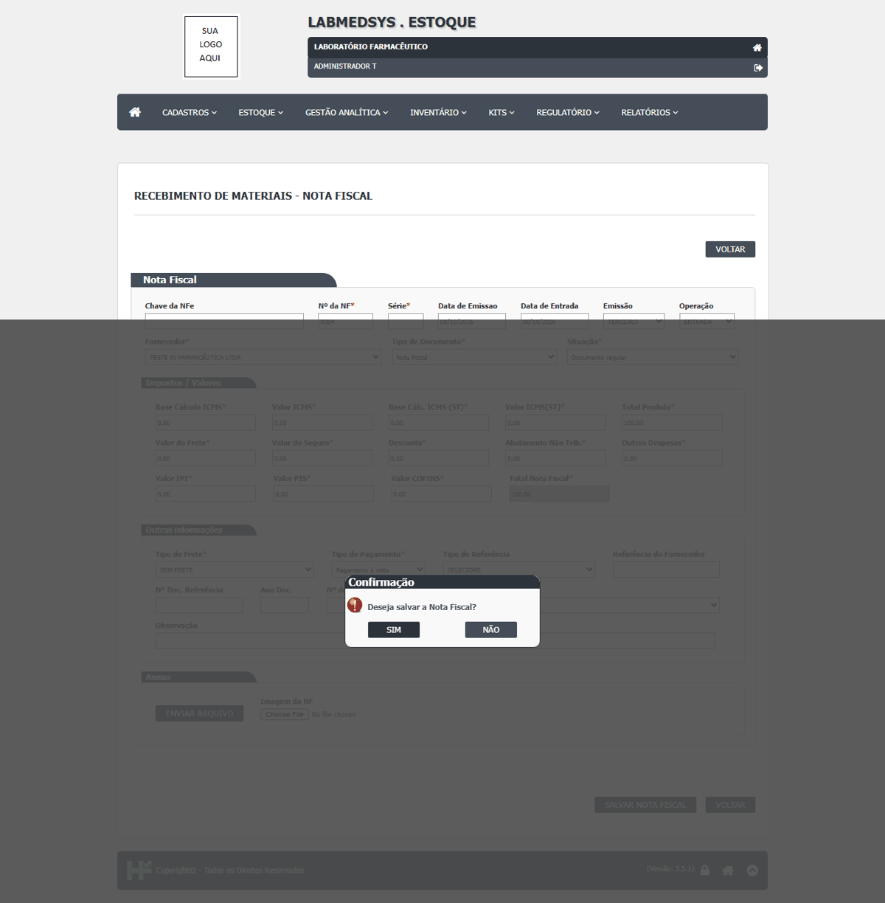
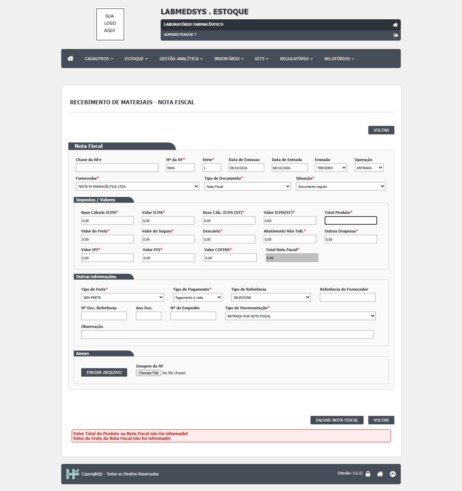